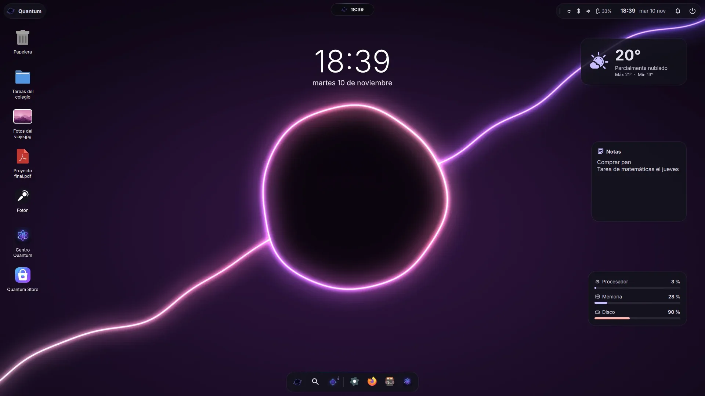
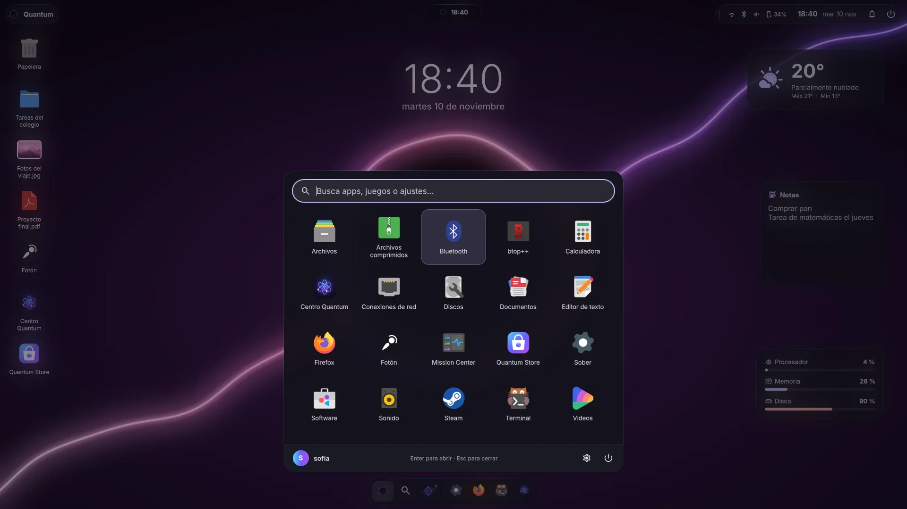
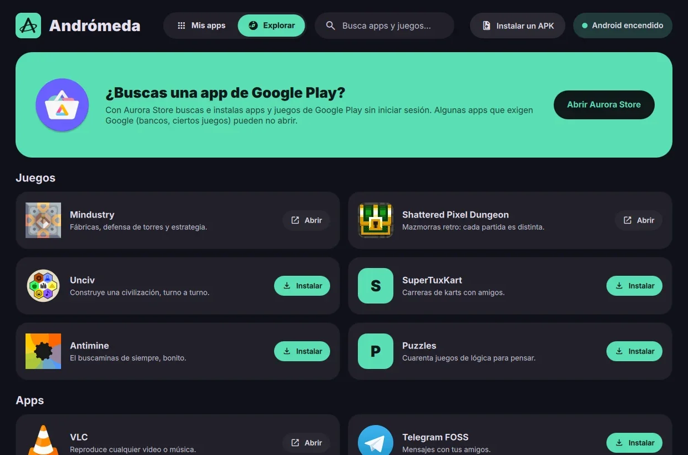
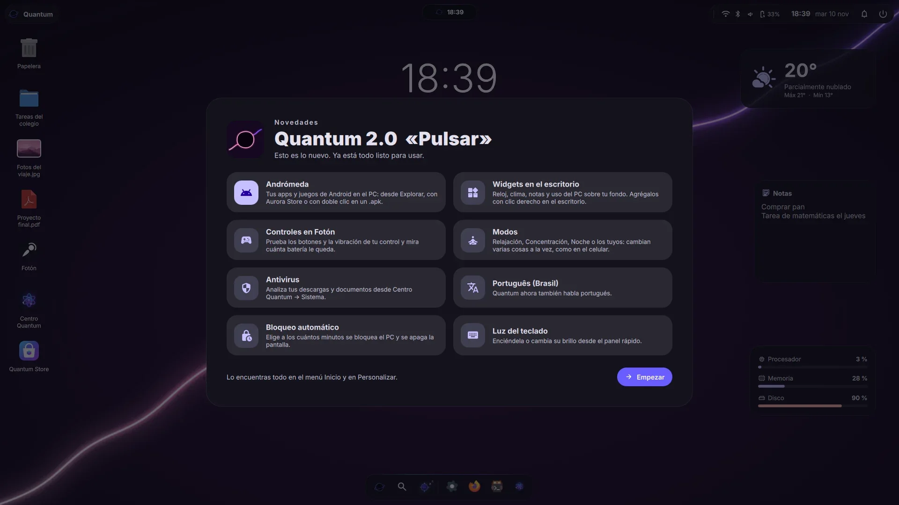
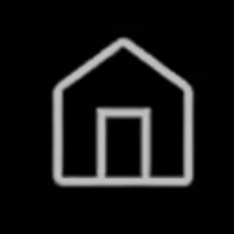

Quantum 2.0 “Pulsar”
The biggest update so far. If you already have Quantum, it arrives with “Update”.
Andromeda: your Android apps on the PC
Install phone games and apps with one click: from Explore, with Aurora Store or by double-clicking an .apk. Each app opens in its own window and shows up in the Start menu.
Desktop widgets
Clock, weather, notes and PC usage on your wallpaper.
Controllers in Fotón
Test buttons and vibration, and see how much battery your controller has left.
Modes
Relax, Focus or Night: they change several things at once, like on your phone.
Português (Brasil)
Quantum now speaks Portuguese too.
Antivirus
Scan your downloads and documents with one click from Quantum Center.
A desktop like Windows
The light-blue selection box, moving several icons at once and the usual menu.
New logo and Pulsar wallpaper
A renewed identity, with the animated wallpaper and a floating boot animation.
All the good of Linux, without the hard part
Made for gaming
Steam with Proton ready, the Zen kernel, game mode and Fotón: your Steam, Epic, GOG and Windows games in one place.
Easy if you come from Windows
Taskbar, Start menu and the usual shortcuts. .exe files open with a double-click.
Quantum Store
One store for everything: the Arch repos, Flathub and the AUR. Search, click, done.
Your style, instantly
Light or dark mode, three desktop styles and colors that follow your wallpaper. No restart.
No ads, no surprises
No ads, no “suggested” apps, no forced restarts. You decide when to update.
Roll back if something breaks
A system snapshot is saved before every update. If something goes wrong, pick the previous one at boot.
Beautiful from the first click
Real Quantum Linux 2.0 screenshots. Tap one to see it full size.

Desktop with widgets and the Pulsar wallpaper
Start menu
Andromeda
What’s newWindows 11 vs Quantum
| Windows 11 | Quantum Linux | |
|---|---|---|
| Price | Paid license | check_circleFree |
| Ads and suggested apps | Yes, in the Start menu | check_circleNone |
| Requires TPM 2.0 and a recent CPU | Yes | check_circleNo |
| Android apps | Not anymore (removed) | check_circleYes, with Andromeda |
| Restarts for updates | Automatic | check_circleWhenever you want |
| Account required to install | Microsoft account | check_circleNo |
| Open source | No | check_circleYes |
Download Quantum 2.0
Try it from a USB without installing anything. If you like it, install it alongside Windows in a couple of clicks.
Quantum Linux 2.0 «Pulsar»
Direct download from SourceForge (all versions and their SHA256 sums).
SHA256: 4530a4fdb596252dd728e9f54953093a8550a3765c73cf39051a221b352ce116
In 3 steps
- 1Download the ISO3.5 GB, straight from SourceForge.
- 2
- 3Boot and installTry it and press “Install Quantum”. “Install alongside Windows” is already selected.
Requirements
- memory64-bit processor
- memory_alt4 GB of RAM (8 GB recommended)
- hard_drive40 GB of disk
- usbAn 8 GB USB to install
From Windows, without touching the BIOS Beta
Open it, answer a few questions and plug in a USB drive. Quantum downloads, installs itself alongside Windows (or instead of it) and brings your files.
It’s a beta: back up your important files first. If Windows says “Windows protected your PC”, tap “More info” and then “Run anyway”.
Have Windows on the same disk?
The installer checks that Windows is fully shut down (no hibernation or “Fast startup”), has no BitLocker and has space left. If something is missing, it tells you how to fix it in plain words, and then you just drag a divider to split the space.
Move everything from Windows
Your files, your picture, your wallpaper, your Wi-Fi networks, your bookmarks and your Steam games, in Quantum in minutes.
- 1In WindowsDownload “Move to Quantum” and open it. Nothing to install.
- 2Copy to a USB driveChoose what to bring and copy it all with one click.
- 3Plug it into QuantumQuantum detects it and puts everything in its place.
Move to Quantum
For Windows 10 and 11 · 6 MB · Nothing to install
SHA256: 6321f72e222382f01ceeda6e7908ea8d98636486a08401c1793d808671fe4c03
Technical details
| Version | 2.0 “Pulsar” (November 10, 2026) |
| Based on | Arch Linux (rolling release) |
| Architecture | x86_64 (64-bit) |
| Kernel | linux-zen |
| Desktop | Quantum Shell (our own, built with Quickshell/QML) on Wayfire 0.11 (Wayland), with three styles: Caelestial, Serpantium and Nimbus |
| Installer | Calamares 3.4 with our own design and “Install alongside Windows” · installer for Windows (beta) |
| File system | Btrfs with Snapper: a system snapshot before every update |
| Boot | GRUB · UEFI and BIOS · Secure Boot (signed shim + our own key) |
| Packages | pacman (Arch repos and our signed [quantum] repo) · Flatpak/Flathub · AUR |
| Our apps | Quantum Center, Quantum Store, Fotón (games), Andromeda (Android), Files, Cronos, Drivers, Help, Move to Quantum |
| Games | Steam con Proton, Proton-GE, umu, MangoHud, GameMode |
| Android | Andromeda: Waydroid (Android 13, no Google), F-Droid and Aurora Store |
| Languages | Spanish, English and Portuguese (Brazil) |
| License | GPL-3.0 (our code) · free software |
How it has grown
Quantum updates often: improvements arrive on their own with “Update”.
- Nov 10, 2026
Quantum 2.0 “Pulsar”
- Andromeda: Android apps and games on the PC, no Google account.
- Desktop widgets, Modes (Relax, Focus, Night) and antivirus.
- Controllers in Fotón: button test, vibration and battery.
- A desktop like Windows: the light-blue selection box and the usual menu.
- Portuguese (Brazil), a What’s new window after updating and a new logo.
- Animated Pulsar wallpaper and a boot animation with the floating logo.
- Nov 2026
1.8 and 1.9 “Quark”
- Redesigned Personalize, the animated Onda wallpaper and fixes reported by testers.
- Serpantium and Nimbus can now be customized; automatic lock and keyboard backlight.
- Oct 31, 2026
Full welcome, Files and animated wallpapers
- A 5-step welcome, the Files explorer and animated wallpapers that pause while gaming.
- Oct 25, 2026
Install from Windows
- Installer for Windows, Secure Boot without disabling anything and “Move to Quantum”.
- Oct 20, 2026
Quantum Linux 1.0 “Quark”
- First public version (beta): Quantum Shell, Quantum Center, Quantum Store and Fotón.
Help and docs
Install
From Windows with the installer, or by writing the ISO to a USB and choosing “Install Quantum”.
Update
Tap the updates notice in the bar or “Update” in Quantum Center. The system and apps update at once.
Roll back
If an update fails, choose the previous system snapshot in the boot menu.
Report a bug
From “Help and suggestions” in Quantum, or by opening a report on GitHub.
Get help
The community answers on the Quantum Discord.
Code and packages
The project and its signed [quantum] package repo are on GitHub.
Frequently asked questions
Can I bring my stuff from Windows?
Yes. With “Move to Quantum” you copy your files, picture, wallpaper, Wi-Fi networks, bookmarks and Steam games to a USB drive in Windows. When you plug it into Quantum, everything goes to its place.
Can I use Android apps?
Yes, with Andromeda. The first time it downloads Android (about 900 MB), then you install apps from Explore, with Aurora Store or by double-clicking an .apk. Some apps that require Google (banks, certain games) may not open.
Do I have to enter the BIOS to install?
No, if you use the installer for Windows: it prepares the USB drive and restarts the PC by itself. You’ll only see a blue screen the first time, so your PC trusts Quantum with Secure Boot on.
Is it really free?
Yes. Quantum Linux is free and open source. No paid version, no subscriptions, no ads.
Do my Windows games work?
A lot of them do, thanks to Steam and Proton. Some games with anti-cheat (like Valorant) still don’t work on Linux. You can check each game on ProtonDB.
Do I need to use the terminal?
No. You install apps from Quantum Store, change settings in Quantum Center and Personalize, and update with a button.
Can I try it without installing?
Yes. Booting from the USB gives you a full live session; nothing changes on your PC until you press “Install Quantum”.
Made with the community
Quantum Linux exists thanks to these people.
@quantum.os
Project creatorIdea, design and development of Quantum Linux.
Lauty
Jack of all tradesFirst official contributor. Created the Quantum Discord and helps with everything.

Interactive proyects
Web designImproved this page: dark mode, animations and a better mobile version.
ilyamiro
Inspired SerpantiumCreator of Serpantinum, the desktop that inspired Serpantium (@ilyamiro.dev).
favorite And everyone who comments, tests and shares: every idea on TikTok helps decide what comes in the next version.